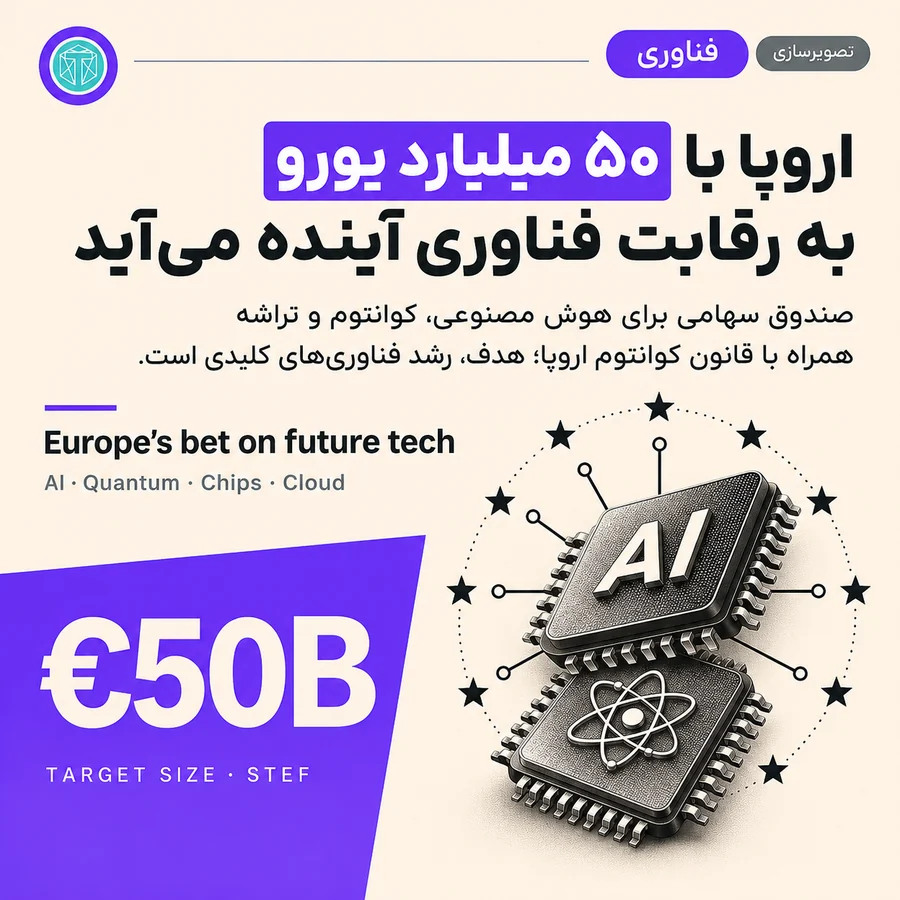

اروپا با ۵۰ میلیارد یورو به رقابت فناوری آینده میآید
Europe’s €50 billion bet on future tech
از هوش مصنوعی تا کوانتوم: صندوق STEF و قانون کوانتوم، چه کسانی میبرند و کجا بیشتر جواب میدهد
From AI to quantum: the STEF fund and the Quantum Act, who gains and where it works best
کمیسیون اروپا در ۲۵ نوامبر ۲۰۲۶ «قانون کوانتوم» را پیشنهاد داد و زمینهی یک صندوق سرمایهگذاری سهامی تازه را چید: صندوق سهام فناوری مستقل اروپا (Sovereign Tech Equity Fund یا STEF) با هدف تا ۵۰ میلیارد یورو برای هوش مصنوعی، کوانتوم، تراشه و زیرساخت ابری. هنّا ویرکونن، معاون اجرایی کمیسیون در امور حاکمیت فناوری، گفت: «اروپا باید همین حالا سرعت بگیرد.» این گزارش میگوید این پول از کجا میآید، با برنامههای قبلی چه فرقی دارد، به چه کسانی بیشتر میرسد و در کدام مناطق اروپا احتمالاً بیشتر جواب میدهد.
در یک نگاه
- چه شد: پیشنهاد قانون کوانتوم و طرح اولیهی صندوق STEF در یک روز
- رقم: تا ۵۰ میلیارد یورو، ولی هدف است، نه پول قطعی. سهم پول عمومی هنوز در مذاکره است
- فرق اصلی: چکهای بزرگتر، ریسک بیشتر و نگهداری طولانیتر سهام نسبت به برنامههای فعلی
- ذینفع اصلی: شرکتهایی که از مرحلهی استارتاپ گذشتهاند و برای بزرگ شدن به صدها میلیون یورو نیاز دارند
- زمان: جزئیات در فوریه؛ تأمین مالی به بودجهی هفتسالهی ۲۰۲۸ تا ۲۰۳۴ گره خورده
1. دقیقاً چه اتفاقی افتاد؟
کمیسیون اروپا دو کار را با هم انجام داد (کمیسیون اروپا):
- قانون کوانتوم: چارچوبی برای اینکه پژوهش کوانتومی اروپا به محصول و صنعت تبدیل شود، زنجیرهی تأمین امن شود و سامانههای دیجیتال برای رمزنگاری پساکوانتومی آماده شوند
- صندوق STEF: ابزار تازهای برای سرمایهگذاری سهامی و شبهسهامی در فناوریهایی که برای حاکمیت فناوری و امنیت اقتصادی اروپا حیاتیاند. کمیسیون میگوید آن را «بهسرعت» با گروه بانک سرمایهگذاری اروپا (EIB) و کشورهای عضو راه میاندازد
ویرکونن گفته: «میخواهیم صندوقی بسازیم و هدف ما اکنون ۵۰ میلیارد یورو است» و این رقم را «نقطهی شروع» خوانده (Implicator). طبق گزارشها، امانوئل مکرون هم از همین رقم حمایت کرده و کمیسیون کل نیاز سرمایهگذاری برای حاکمیت فناوری را حدود ۵۰۰ میلیارد یورو برآورد میکند (HedgeCo).
2. چرا اروپا به چنین صندوقی نیاز دارد؟
| شاخص | اروپا | مقایسه |
|---|---|---|
| سهم از شرکتهای کوانتومی جهان | حدود یکسوم | بیشترین سهم در جهان |
| سرمایهی خصوصی استارتاپهای کوانتومی در ۲۰۲۵ | ۱٫۱ میلیارد یورو (حدود ۵٪ جهان) | آمریکا: ۷ میلیارد یورو |
| سهم از جریان جهانی سرمایهگذاری خطرپذیر | حدود ۵٪ | آمریکا ۵۲٪، چین ۴۰٪ |
| یونیکورنهایی که به خارج میروند | نزدیک ۳۰٪ | |
| وابستگی به تأمینکنندگان غیراروپایی در محصولات و مالکیت فکری دیجیتال کلیدی | بیش از ۸۰٪ |
منابع: Quantum Computing Report و Political.org.
خلاصهی مشکل: اروپا در پژوهش قوی است، ولی وقتی شرکتها میخواهند بزرگ شوند، چکهای بزرگ در داخل قاره کم است. طبق مطالعهی بانک سرمایهگذاری اروپا، اسکیلآپهای اروپایی تا سال دهم حدود نصف همتایان سانفرانسیسکویی سرمایه جذب میکنند. نتیجه این است که شرکتها برای سرمایه، خریدار یا ورود به بورس به آمریکا میروند.
یک مقام کمیسیون اینطور گفته: «آنچه در این منظره کم است، چکهای بزرگتر برای تأمین مالی شرکتهای راهبردی ماست.»
3. مقایسه با برنامههای قبلی
| برنامه | سال | اندازه | اندازهی چک برای هر شرکت | ویژگی |
|---|---|---|---|---|
| صندوق شورای نوآوری اروپا (EIC) | در حال فعالیت | تا ۳۰ میلیون یورو | استارتاپهای فناوری عمیق | |
| طرح قهرمانان فناوری اروپا (ETCI) | ۲۰۲۳ | صندوق صندوقها | از طریق صندوقهای بزرگ | ۱۵ صندوق بزرگ و ۱۲ یونیکورن |
| صندوق Scaleup Europe | ۲۰۲۵ تا ۲۰۲۶ | هدف ۵ میلیارد یورو (۱ میلیارد از کمیسیون) | حدود ۱۰۰ تا ۳۰۰ میلیون یورو | مدیریت EQT؛ از سری B به بعد |
| نسخهی دوم ETCI | ژوئیهی ۲۰۲۶ | تا ۱۵ میلیارد یورو، بسیج تا ۸۰ میلیارد | میانگین ۲۰۰ میلیون یورو | بیش از ۱۵۰۰ اسکیلآپ، هر ۲۷ کشور |
| صندوق STEF | پیشنهاد نوامبر ۲۰۲۶ | هدف تا ۵۰ میلیارد یورو | «بزرگتر» (هنوز اعلام نشده) | سهم مستقیم، پرریسکتر و بلندمدتتر |
تفاوت اصلی STEF: برنامههای قبلی بیشتر «صندوق صندوقها» بودند و پول را به مدیران خصوصی میسپردند. STEF قرار است مستقیمتر وارد شود، سهم بزرگتر بگیرد و صبورتر بماند. اندازهاش هم ده برابر هدف Scaleup Europe است.
پیشزمینهی بزرگتر: گزارش ماریو دراگی در سپتامبر ۲۰۲۴ گفت اروپا باید سالانه حدود ۸۰۰ میلیارد یورو بیشتر سرمایهگذاری کند؛ یعنی حدود ۵ واحد درصد تولید ناخالص داخلی. برای مقایسه، طرح مارشال سالانه ۱ تا ۲ درصد بود (Brussels Times). STEF تکهای از پاسخ به همان شکاف است.
4. قانون کوانتوم چه میخواهد؟
| هدف | زمان |
|---|---|
| حدود ۱۰۰ کیوبیت منطقیِ تصحیحخطا در هر سیستم | ۲۰۳۰ |
| هزاران کیوبیت منطقی | ۲۰۳۵ |
| ناوبری و زمانسنجی بدون ماهواره | ۲۰۳۰ |
| شبکههای کوانتومی شهری ۵۰ کیلومتری | |
| شبکهی ارتباط کوانتومی زمینی و فضایی اروپا (EuroQCI) | ۲۰۳۱ |
| شروع مهاجرت به رمزنگاری مقاوم در برابر کوانتوم | پایان ۲۰۲۶ |
| امنسازی سامانههای پرخطر | پایان ۲۰۳۰ |
ابزارهای دیگر قانون: شبکهی پژوهشگاههای برتر، چالشهای بزرگ با تأمین مالی هدفمند، هابهای نوآوری برای استارتاپها، پروژههای راهبردی صنعتی، پایش زنجیرهی تأمین و اولویت خرید عمومی برای تأمینکنندگان اروپایی و شرکای متقابل. کمیسیون میگوید این به معنای ساخت همهی قطعات در اروپا نیست.
طبق راهبرد کوانتوم کمیسیون (۲۰۲۵)، پول عمومی کوانتوم در اتحادیه و کشورهای عضو بیش از ۱۱ میلیارد یورو بوده و نیاز تأمین مالی ۲۰۲۸ تا ۲۰۳۴ بین ۱۲٫۹ و ۱۸٫۱ میلیارد یورو برآورد شده است (Quantum Computing Report).
5. کاربردها: چرا کوانتوم مهم است؟
- پزشکی: شبیهسازی مولکولها و تسریع کشف دارو؛ قانون از تصویربرداری پزشکی کوانتومی هم نام میبرد
- انرژی: طراحی مواد پیشرفته و باتریهای کارآمدتر
- حملونقل: بهینهسازی مسیرها و ناوبری مستقل از ماهواره
- صنعت: شبیهسازی مواد و فرایندهای پیچیدهی تولید
- امنیت دیجیتال: رمزنگاری مقاوم در برابر کامپیوترهای کوانتومی آینده
بسیاری از این کاربردها هنوز در مرحلهی پژوهشاند؛ برای همین است که پول صبور اهمیت دارد.
6. چه کسانی بیشتر سود میبرند؟
این بخش تحلیل دیتومان است که بر پایهی دادههای بالا ساخته شده.
| گروه | چرا |
|---|---|
| اسکیلآپهای هوش مصنوعی، کوانتوم و تراشه | گره اصلی آنها چکهای صدها میلیونی است؛ دقیقاً همان چیزی که STEF هدف گرفته |
| صندوقهای بزرگ رشد و سرمایهگذاران نهادی | پول عمومی قرار است کنارشان بیاید و ریسکشان را کم کند (هدف: تا ۶ یورو پول خصوصی به ازای هر ۱ یورو پول اتحادیه) |
| پژوهشگاهها و دانشگاههای قطبها | شبکهی پژوهشگاهها، زیرساخت مشترک و چالشهای بزرگ |
| خریداران عمومی و صنایع امنیتی | اولویت خرید اروپایی و مهاجرت اجباری به رمزنگاری پساکوانتومی |
| استارتاپهای خیلی نوپا | سود کمتر و غیرمستقیم؛ STEF برای مراحل بزرگتر است |
7. در کدام مناطق اروپا احتمالاً بیشتر جواب میدهد؟
پول سهامی معمولاً به جایی میرود که شرکتهای آمادهی رشد وجود دارند. طبق یک بررسی تازهی پژوهشی از ۹۳۵ شرکت فناوری کوانتومی جهان، اتحادیهی اروپا ۲۶۳ شرکت دارد (حدود ۲۸٪)، آمریکا ۱۸۹ و چین ۱۰۰ (arXiv).
| منطقه | پایهی موجود | ارزیابی دیتومان |
|---|---|---|
| آلمان (مونیخ و جنوب) | ۸۱ شرکت کوانتومی؛ بیشترین در اتحادیه | احتمالاً بزرگترین ذینفع |
| فرانسه (پاریس و ساکلی) | ۳۳ شرکت کوانتومی؛ اکوسیستم قوی هوش مصنوعی | ذینفع بزرگ؛ حمایت سیاسی مکرون از رقم ۵۰ میلیارد |
| هلند (دلفت و آیندهوون) | ۲۹ شرکت کوانتومی؛ صنعت تراشه | ذینفع قوی در کوانتوم و تراشه |
| شمال اروپا (فنلاند، سوئد، دانمارک) | شرکتهایی مثل IQM؛ سرمایهگذاران بزرگی مثل EQT، والنبرگ و Novo Holdings | هم شرکت دارد، هم سرمایهگذار |
| جنوب اروپا (اسپانیا، ایتالیا) | بانکها و بنیادهایی مثل سانتاندر، BBVA و اینتسا سانپائولو سرمایهگذارند | بیشتر بهعنوان تأمینکنندهی پول تا گیرنده |
| شرق و مرکز اروپا | قطبهای کوچکتر | خطر عقبماندن، مگر اینکه سهمیه یا شبکهی هابها جبران کند |
بریتانیا با ۷۰ شرکت کوانتومی بیرون از اتحادیه است؛ اینکه شرکتهای بریتانیایی بتوانند از STEF پول بگیرند، هنوز اعلام نشده.
8. آینده: چه چیزهایی را باید دید؟
- فوریه: جزئیات صندوق، پیش از نشست رهبران اتحادیه دربارهی رقابتپذیری
- بودجهی ۲۰۲۸ تا ۲۰۳۴: اندازهی نهایی صندوق به مذاکرات بودجهی هفتساله و «صندوق رقابتپذیری اروپا» گره خورده
- پارلمان و شورا: قانون کوانتوم باید از روند عادی قانونگذاری بگذرد
- حکمرانی: چه کسی تصمیم سرمایهگذاری را میگیرد و سود با سرمایهگذاران خصوصی چطور تقسیم میشود
نقدها: تحلیلگران میپرسند آیا صندوق دولتی بزرگ سرمایهی خصوصی را کنار نمیزند؟ سرمایهگذاری پرریسکتر یعنی احتمال زیان برای مالیاتدهندگان. برخی میگویند مقرراتزدایی بیشتر از صندوق دولتی کمک میکند و برخی دیگر از سرمایهگذاری عمومی استقبال میکنند ولی سازوکار پاسخگویی میخواهند.
9. برای بازار کار و برای ما چه معنایی دارد؟
اگر برنامه موفق شود، تقاضا برای متخصصان نرمافزار، الکترونیک، مهندسی مواد، فیزیک، امنیت سایبری و هوش مصنوعی در اروپا بیشتر میشود. شرکتهای کوچک و دانشگاهها هم با دسترسی بهتر به تجهیزات و سرمایه، ایده را به محصول نزدیکتر میکنند.
برای دانشجویان، مهندسان و کارآفرینان ایرانی، بهویژه کسانی که در اروپا هستند، دنبال کردن هابهای کوانتومی، چالشهای بزرگ و شرکتهایی که از این صندوقها پول میگیرند، نقشهی خوبی از فرصتهای شغلی و پژوهشی چند سال آینده است.
تحلیل دیتومان
رقابت فناوری در جهان دیگر فقط بر سر ساختن مدلهای پیشرفتهتر هوش مصنوعی نیست؛ بر سر مالکیت زیرساخت، توان پردازش، دانش فنی و ظرفیت تولید صنعتی است. اروپا میگوید پژوهش و استعداد کم ندارد؛ چک بزرگ کم دارد.
ولی رقم ۵۰ میلیارد یورو فعلاً یک هدف است، قانون کوانتوم هنوز تصویب نشده و پول واقعی به بودجهی ۲۰۲۸ گره خورده. معیار موفقیت این نیست که صندوق چقدر بزرگ اعلام شود؛ این است که چند شرکت اروپایی به لطف آن در اروپا میمانند و بزرگ میشوند.
بیشتر بخوانید
منابع
- European Commission: Commission proposes Quantum Act and new Sovereign Tech Equity Fund (25 Nov 2026)
- The Quantum Insider: European Commission proposes Quantum Act and new Sovereign Tech Equity Fund (25 Nov 2026)
- Quantum Computing Report: EU Quantum Act and Sovereign Tech Equity Fund to scale industrial capacity by 2030
- Implicator: EU plans to mobilise up to €50B Sovereign Tech Equity Fund (25 Nov 2026)
- HedgeCo: Commission proposes €50 billion Sovereign Tech Equity Fund (citing Politico)
- Political.org: EU plans up to €50 billion sovereign tech fund (24 Nov 2026)
- EIB: Europe launches €80 billion investment alliance to scale up tech leaders (ETCI 2.0, 10 Jul 2026)
- EMDESK: Scaleup Europe Fund, the EIC's €5 billion growth vehicle
- arXiv: The landscape of quantum technology companies in 2026 (Seskir, Koçak, Aydinoglu)
- Brussels Times: EU must raise spending by €800 billion a year (Draghi report, 9 Sep 2024)
آخرین بازبینی: ۵ آذر ۱۴۰۵. مفاد قانون کوانتوم از اطلاعیهی کمیسیون اروپا و رقمها و جزئیات صندوق از گزارشهای Implicator، HedgeCo (به نقل از Politico) و Quantum Computing Report بررسی شد. رقم ۵۰ میلیارد یورو هدف است، نه پول قطعی. بخشهای ذینفعان و مناطق تحلیل دیتومان است. متن کامل پیشنهاد قانون و برگهی اطلاعات کمیسیون را مستقیم نخواندیم.